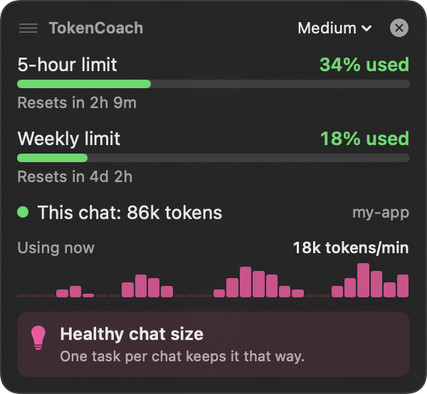
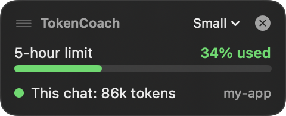
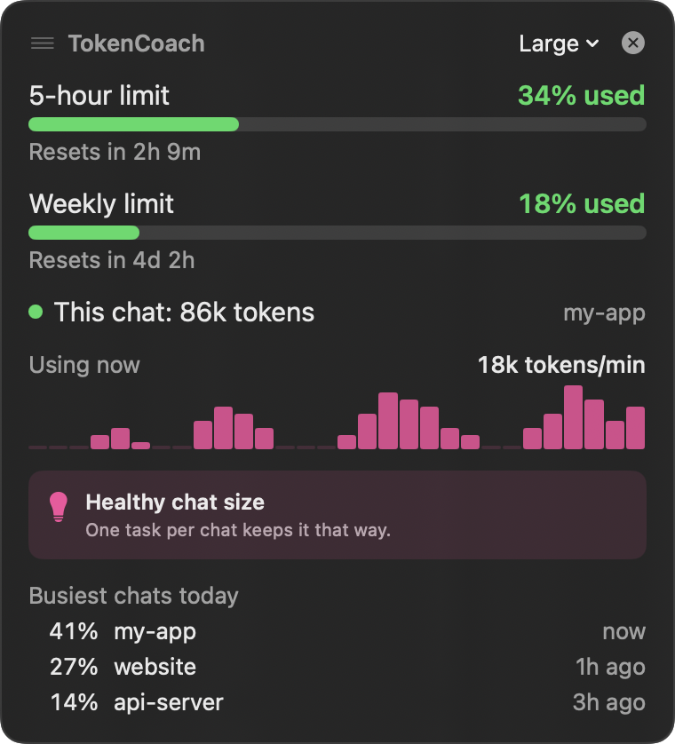

For people who use Claude Code all day
TokenCoach shows how much of your 5-hour and weekly limit you've used, how big your current chat is, and when to start a fresh one. It sits in your menu bar, in a small floating box, and right in your terminal.
Install free, takes 1 minute ↓
Claude doesn't warn you until you've hit the limit. And it's easy to burn through it without noticing, because every message re-reads the whole chat. TokenCoach makes that visible.
See your 5-hour and weekly % and exactly when they reset. Pace a big task, or finish it before you're locked out.
A 200k-token chat uses your limit about 4× faster than a 50k one. The dot turns orange, then red, so you know when to wrap up and start fresh with /clear.
Which chats and which tools (file reads, shell commands, web) used the most today. Often it's one huge file read you didn't notice.
A single plain-English tip for right now, plus a Mac notification once per warning. No spam.
Simple example: you're deep in a refactor at 72% of your 5-hour limit, and your chat is at 240k tokens. TokenCoach turns orange and says "start a fresh chat". You do, and the same work now costs a quarter as much. You finish the task instead of hitting the limit halfway.
Three places, pick any. You don't have to leave your terminal to use it.
If you live in the terminal, this is all you need. Under Claude Code's input box you'll see your model, your 5-hour %, and how full this chat is. It updates as you work.
The installer turns this on for you. If you already have your own status line, it leaves yours alone.
A little gauge and your 5-hour % sit next to the clock. Click it for the full picture: both limits, this chat, live usage, which chats and tools used the most today, and the settings.
A small box that floats above every window, even full-screen apps like the Claude desktop app. Drag it anywhere, pick Small, Medium or Large, or hide it with the ×.
Works with Claude Code in the terminal and in the Claude desktop app.

Every number in the box, in plain words.
Small stays out of the way. Large is easy to read from across the desk.

No coding needed. Just copy and paste one line.
Press ⌘ Command + Space, type Terminal, then press Return. A window with text opens. You don't need to know anything about it.
Click Copy. Click inside the Terminal window, press ⌘ Command + V to paste, then press Return.
curl -fsSL https://tokencoach.vercel.app/install.sh | bash
After a few seconds, Terminal says Done! You'll see TokenCoach in your menu bar (top right) and the box in the corner. You can close Terminal. Your limit % shows up after your next Claude Code message.
You need: a Mac with macOS 14 (Sonoma) or newer, and Claude Code. The 5-hour and weekly % show for Claude Pro and Max plans; chat sizes work for everyone.
It downloads a short install script from this site and runs it. The script:
You can read the whole script here before you run it.
No. TokenCoach only reads the Claude Code chat files already on your Mac. It has no account, no tracking, and never sends anything over the internet. All the code is on GitHub.
Both. TokenCoach reads Claude Code chats from the terminal and from the Code tab in the Claude desktop app. The status line (place 1 above) only appears in the terminal version. The menu bar and floating box work everywhere.
This way doesn't turn on the limit %. TokenCoach will still show your chat sizes. The Terminal install above does everything for you.
Update: run the same Terminal line again. It replaces the old version.
Remove: click TokenCoach in your menu bar, click Quit, then drag TokenCoach from Applications to the Trash.